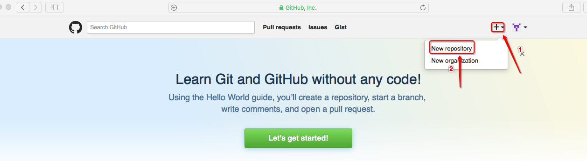
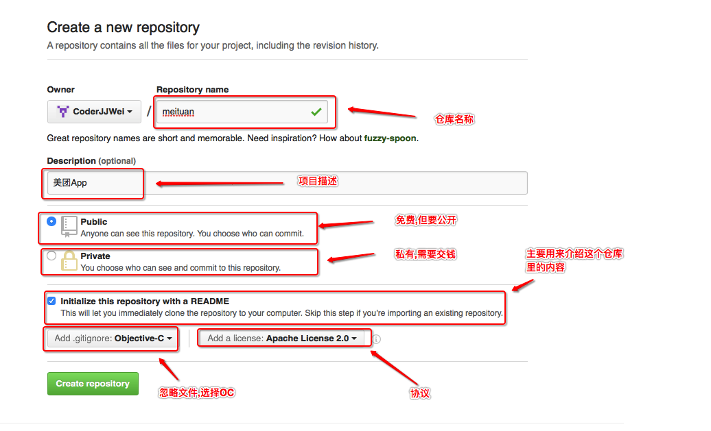
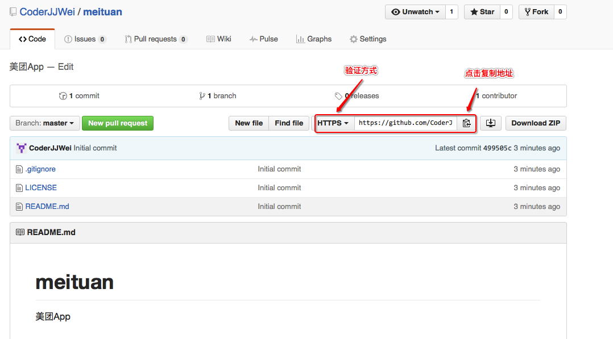
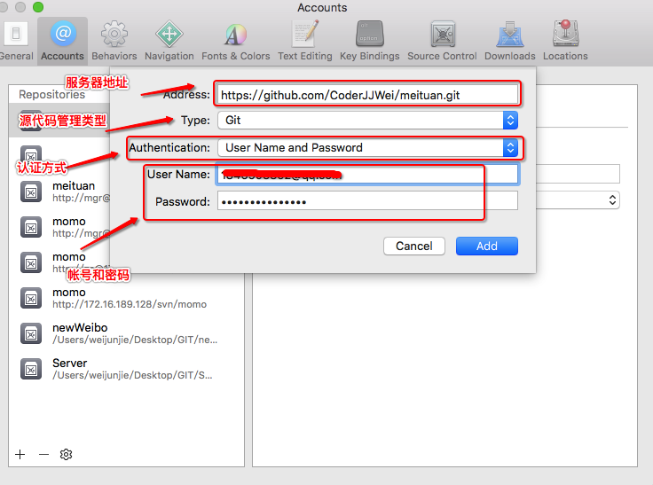
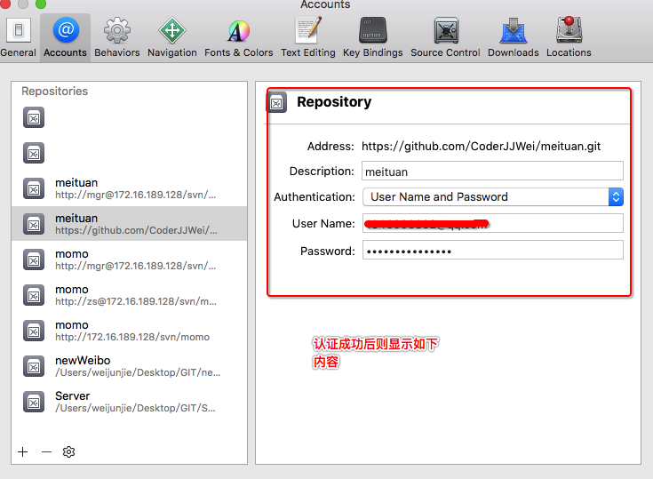
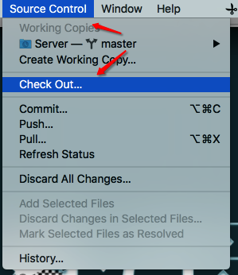
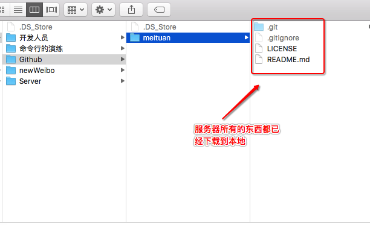
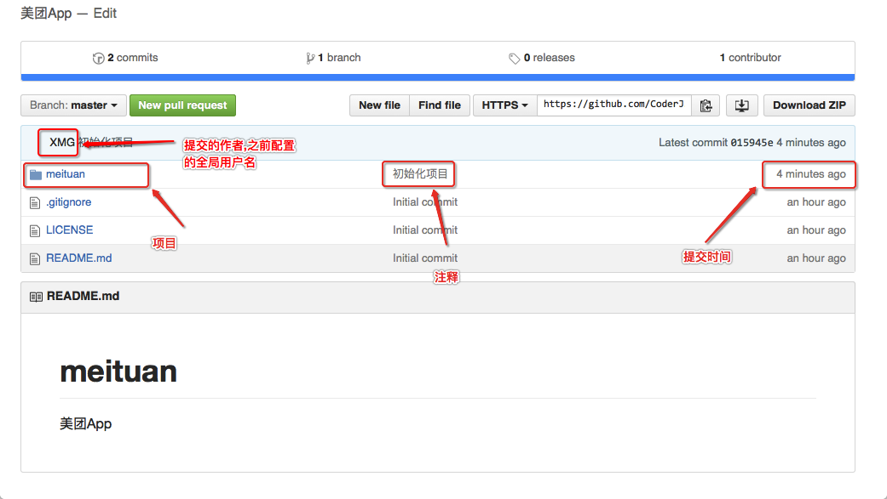
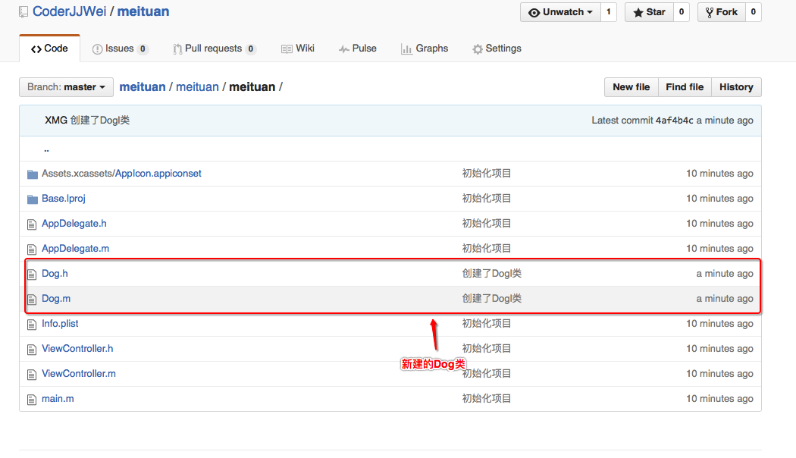

Github->创建Github代码仓库和HTTPs验证
一.前提准备
1.在GIT中创建一个Github文件夹演练的github二.登陆github网站git hub

- 三.创建远程仓库
1.点击+ ->New repository
2.创建远程代码仓库
3.创建后会来到此界面,将https的url复制下来 - 四.在Xcode中添加远程仓库
1.点击Xcode的偏好设置
2.点击添加仓库
3.填写服务器地址,源代码管理类型,认证方式以及帐号密码
4.看到以下界面说明认证成功 - 五.初始化项目
1.点击Source Control -> checkout2.选择刚刚创建远程仓库
3.下载到指定位置
4.查看下载的内容5.创建项目放到meituan工作目录
6.将项目commit并push到远程仓库(Source Control -> commit)
7.浏览器查看仓库里是否有该项目 - 六.开始开发
1.创建dog类commit并push到远程仓库(Source Control -> commit)
2.浏览器查看仓库里是否有Dog类 - 六.总结
1.创建代码仓库的时候选择需要忽略的语言文件 2.在提交到服务器的时候,如果网络不太好,可以先commit,之后再push到远程服务器